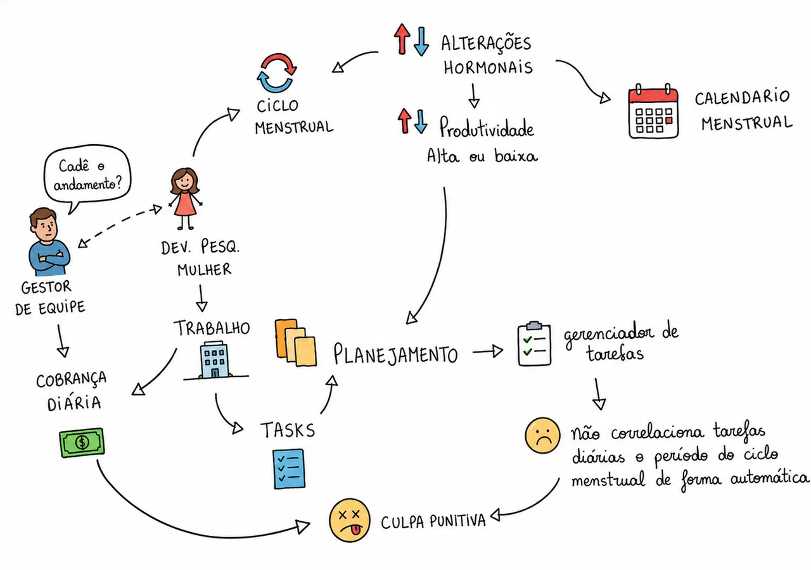
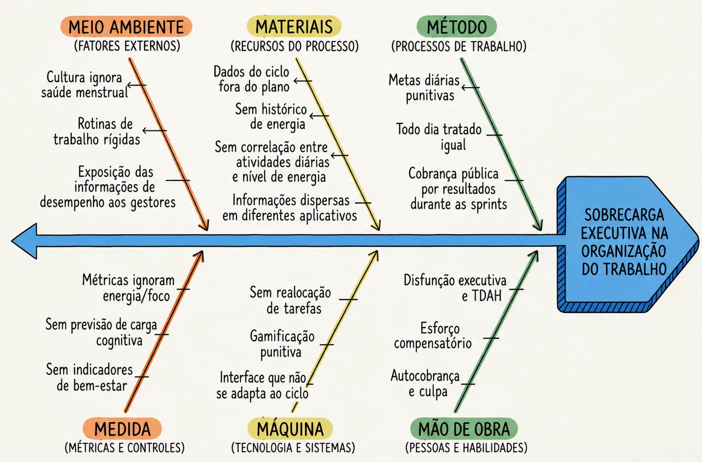
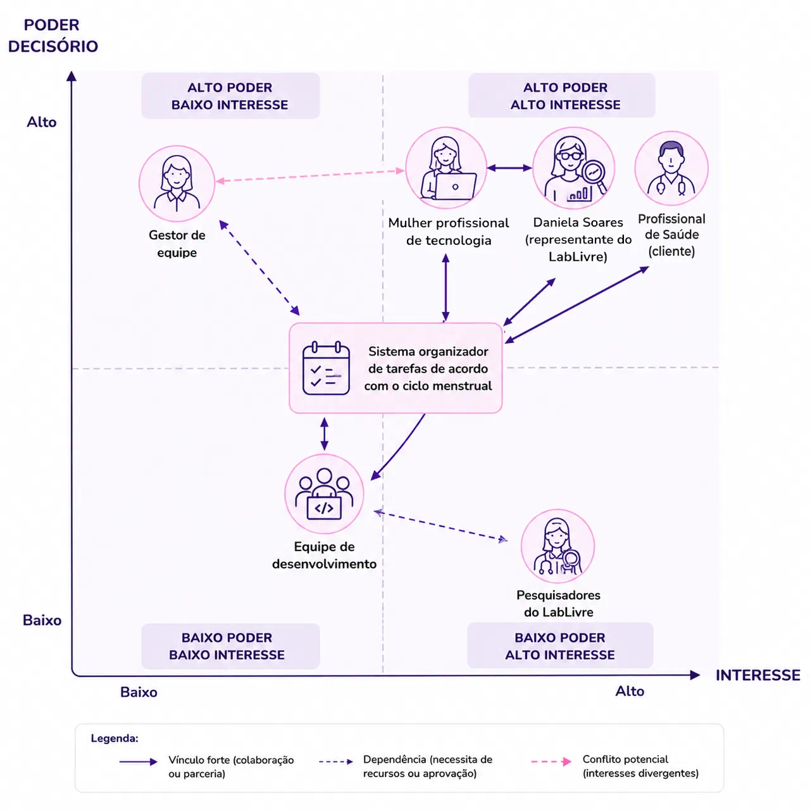

Visão de produto
Para quem construímos, com quem conversamos e como a equipe se organiza.
O produto
Aplicativo de organização de tarefas que adapta o planejamento diário às variações de energia, foco e disposição ao longo do ciclo menstrual, desenvolvido na disciplina de Requisitos de Software da FCTE/UnB.
Cliente
Dra. Cláudia Araújo Bottino, ginecologista. Valida o valor de negócio e os conteúdos de saúde.
Usuária representativa
Daniela Soares. Participa das revisões e dos testes de aceitação.
Abordagem
Híbrida: ciclo de vida iterativo e incremental e processo OpenUP.
O problema
Mulheres que atuam na tecnologia organizam o trabalho em ferramentas que tratam todos os dias da mesma forma. Isso gera metas descoladas da capacidade real, sobrecarga executiva e culpa punitiva.
Objetivo geral: reduzir a sobrecarga associada à disfunção executiva e às flutuações do ciclo menstrual na produtividade da mulher, por meio de um aplicativo de organização de tarefas que se adapta ao ciclo.
Contexto em imagens
Clique em uma figura para ampliar.
Atores
| Ator | Relação com a solução | Interesse principal |
|---|---|---|
| Mulher profissional de tecnologia | Usuária direta e principal beneficiária | Planejar tarefas considerando o ciclo, com menos sobrecarga e culpa |
| Dra. Cláudia Araújo Bottino | Cliente; define a priorização final e faz a aceitação formal | Informações e recomendações clinicamente corretas |
| Daniela Soares | Usuária representativa; pode reprovar usabilidade, linguagem e privacidade | Solução alinhada à inclusão e permanência de mulheres na tecnologia |
| Gestor de equipe | Não usa o sistema, mas define demandas e prazos | Previsibilidade de entrega |
| Equipe de desenvolvimento | Responsável pela construção | Atender às necessidades reais da cliente |
Para quem é
Estudantes de tecnologia
18 a 24 anosConciliam estudos, projetos e outras responsabilidades.
Jovens profissionais
25 a 30 anosLidam com prazos e demandas simultâneas no início da carreira.
Profissionais experientes
31 a 55 anosAcumulam projetos, liderança, reuniões e múltiplas demandas.
Recortes transversais: mulheres neurodivergentes na tecnologia e mulheres em perimenopausa e menopausa.
O mercado
| Concorrente | O que faz | Onde falha |
|---|---|---|
| Lunar | Integra ciclo, energia e TDAH, com abordagem livre de culpa | Não redistribui tarefas automaticamente |
| Muna | Prevê energia e sugere reagendar no "Grace Mode" | A redistribuição depende da usuária |
| Tiimo | Rotina visual para pessoas neurodivergentes | Não considera o ciclo menstrual |
| SheVinci | Sincroniza o planejamento com o ciclo | Foco em TDPM, SOP e TPM, não em função executiva |
Nosso diferencial: foco em mulheres na tecnologia, redistribuição automática das tarefas e descanso reconhecido, sem pontuação.
Principais desafios
Operacional
Considerar o ciclo sem criar uma nova métrica de cobrança.
Conhecimento
Validar com a cliente antes de assumir qualquer padrão como regra.
Técnico
Ajustar o planejamento com dados sensíveis sob controle exclusivo da usuária.
Ferramentas do processo
Código e documentação no GitHub, decisões de detalhe no WhatsApp.
Rich Picture

A desenvolvedora trabalha sob a influência das alterações hormonais do ciclo, que podem variar sua produtividade. O ciclo pode ser acompanhado em um calendário, mas essa informação não chega ao planejamento das tarefas.
As tarefas são organizadas sem considerar o período do ciclo, enquanto o supervisor mantém a expectativa de entrega e a cobrança diária. Quando a produtividade cai e nem tudo é cumprido, surge a culpa punitiva, que alimenta um ciclo de sobrecarga e perda oculta de produtividade.
Diagrama de Ishikawa

O efeito analisado é a sobrecarga executiva na organização do trabalho. Método: metas diárias punitivas, todo dia tratado igual e cobrança pública por resultados. Mão de obra: disfunção executiva e TDAH, esforço compensatório, autocobrança e culpa.
Máquina: sem realocação de tarefas, gamificação punitiva e interface que não se adapta ao ciclo. Materiais: dados do ciclo fora do plano, sem histórico de energia, sem correlação entre atividades e energia, informações dispersas em aplicativos.
Medida: métricas que ignoram energia e foco, sem previsão de carga cognitiva nem indicadores de bem-estar. Meio ambiente: cultura que ignora a saúde menstrual, rotinas rígidas e exposição do desempenho aos gestores.
Mapa de stakeholders

Os atores são posicionados por poder decisório e interesse em torno do sistema. A usuária, a usuária representativa e a cliente concentram alto poder e alto interesse; o gestor de equipe tem alto poder e menor interesse direto.
As linhas contínuas indicam vínculo forte, as tracejadas indicam dependência e a tracejada rosa marca o conflito potencial entre a usuária e o gestor, cuja expectativa de previsibilidade pode divergir da adaptação ao ciclo.